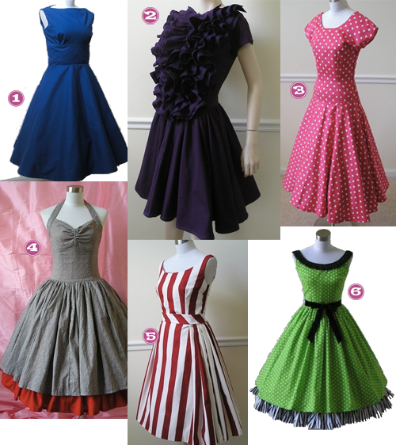

So I could wear things like this every.single.day. Now, if I could only not look like a hooker when I wear red lipstick…

- Etsy, Audreyandgrace Perfect Little Audrey Dress
- Etsy, Audreyandgrace Beautiful Ruffle Short Sleeve Swing Dress
- Etsy, Audreyandgrace Elegant Polka Dot Swing Dress
- Etsy, Audreyandgrace Rockabilly Reversable Dress
- Etsy, Audreyandgrace Striped Swing Party Dress
- Etsy, Audreyandgrace Dots and Stripes Swing Dress with Velvet Tie Bow


Recent Comments